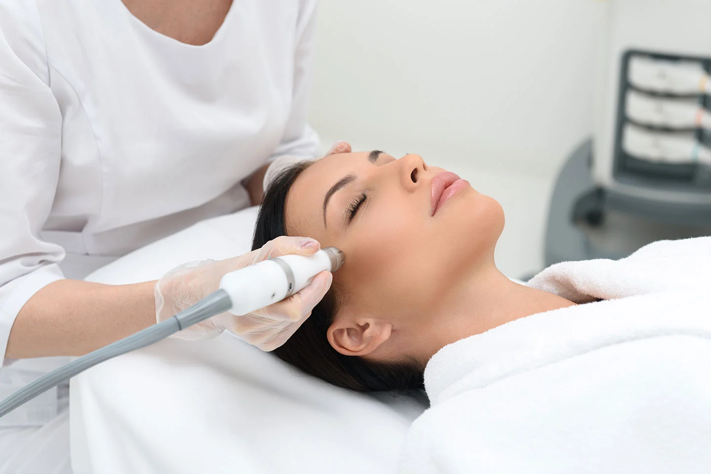
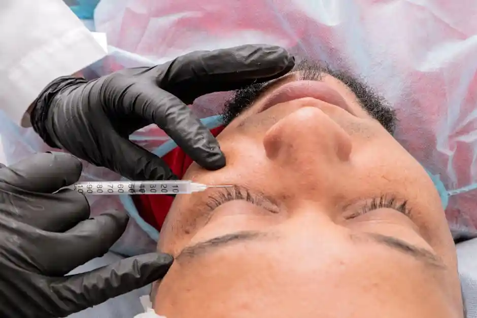
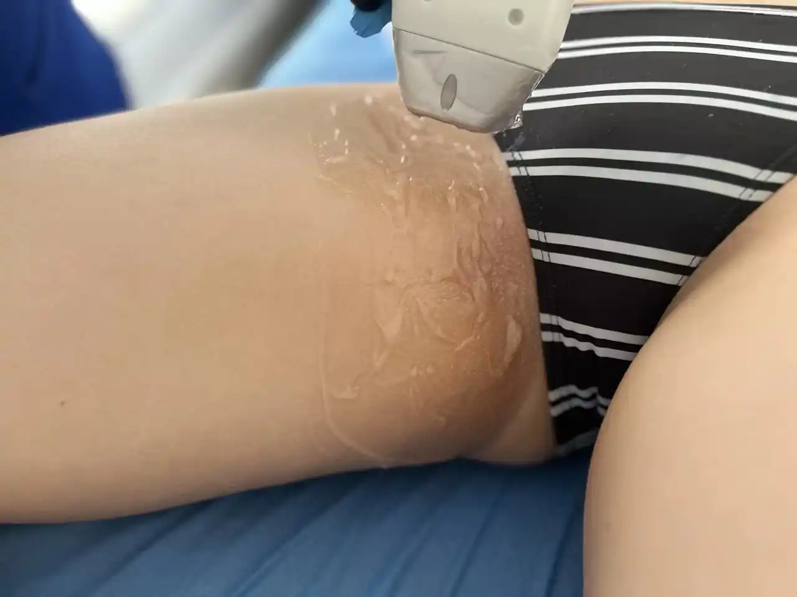
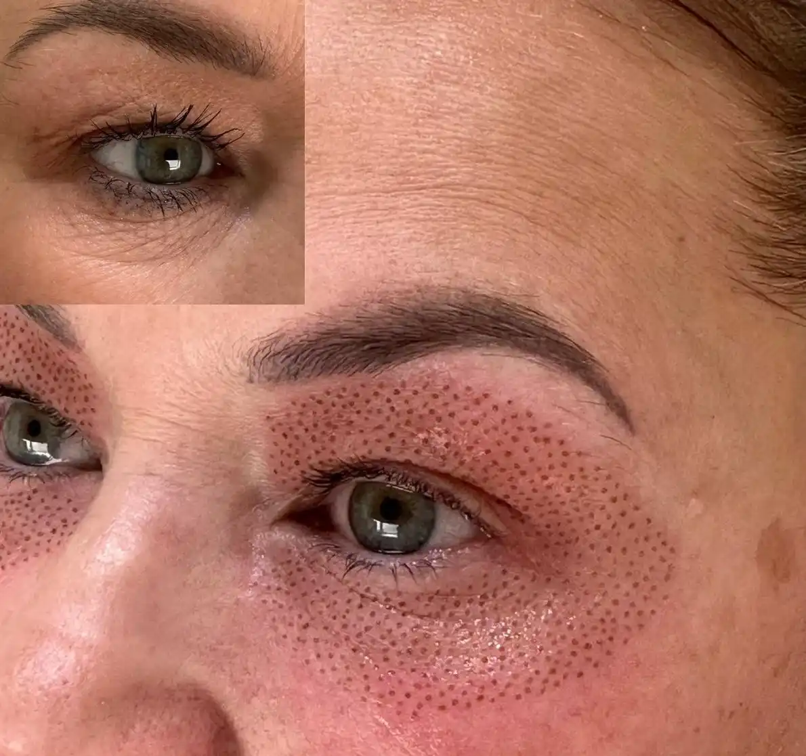
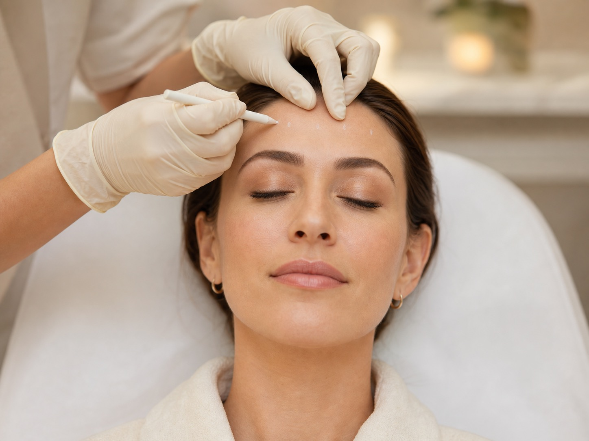
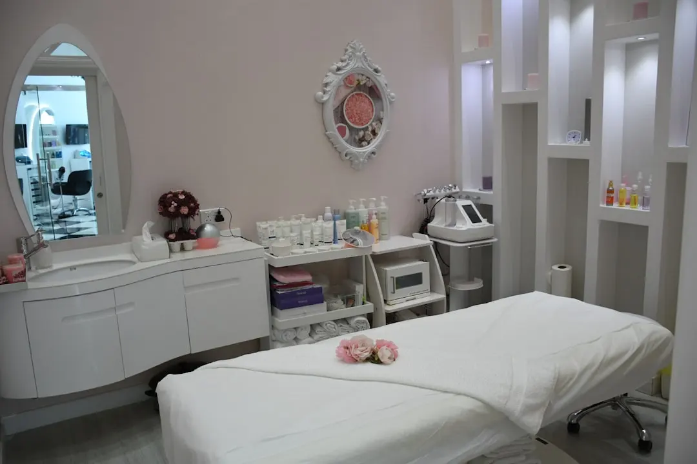

Isa Bellas Aesthetic
Cuidado estético con resultados naturales
Tratamientos faciales y corporales personalizados en Houston, diseñados para renovar tu piel con técnica profesional, detalle y confianza.
Belleza, Ciencia y Confianza en un Solo Lugar
En Isa Bellas, transformamos el cuidado personal en una experiencia de bienestar y belleza avanzada.
Ubicados en el condado de Harris, combinamos técnicas estéticas de vanguardia con un enfoque personalizado que resalta tu belleza natural sin procedimientos invasivos.


Redefiniendo el Bienestar Estético en Harris County
En Isa Bellas, transformamos cada tratamiento en una experiencia única de cuidado y renovación.
Nuestros Tratamientos Destacados
En Isa Bellas, cada servicio ha sido cuidadosamente diseñado para ofrecer resultados visibles, seguros y elegantes.
Descubre los tratamientos más solicitados por nuestras clientas en el condado de Harris, donde la belleza y el bienestar se encuentran en perfecta armonía.
Estética Premium
Cada tratamiento en nuestra selección refleja la excelencia y dedicación de nuestro equipo. Diseñados para brindar resultados visibles, seguros y naturales, nuestros servicios representan lo mejor del cuidado estético en el condado de Harris.
Facial & Skincare
Tratamientos especializados para limpiar, hidratar y rejuvenecer la piel del rostro, combinando tecnología avanzada y técnicas profesionales para resultados visibles y duraderos.
Body Contouring
Procedimientos no invasivos diseñados para moldear la silueta, mejorar la firmeza y realzar la figura, logrando un equilibrio entre belleza natural y bienestar corporal.
Rejuvenecimiento Avanzado
Terapias estéticas que estimulan la regeneración celular, reducen líneas de expresión y revitalizan la piel, ofreciendo un aspecto más joven, fresco y saludable.
Medicina Estética
Tratamientos con enfoque clínico y precisión profesional que integran ciencia y belleza para obtener resultados seguros, naturales y personalizados en cada paciente.
Cuidado Íntimo Femenino
Procedimientos estéticos no invasivos que promueven la uniformidad del tono y el cuidado delicado de la piel íntima, priorizando la seguridad, higiene y confianza femenina.
Terapias de Relajación
Experiencias sensoriales que reducen el estrés, equilibran la mente y revitalizan el cuerpo mediante técnicas suaves y productos aromáticos de alta calidad.
Descubre el Arte del Cuidado Estético
Vive una experiencia única de rejuvenecimiento facial, cuidado corporal y bienestar integral. Cada servicio combina innovación, confort y resultados visibles desde la primera sesión.
Agenda tu cita hoyTransforma Tu Mirada: Servicio Exclusivo de Botox
Descubre el poder del rejuvenecimiento con Botox en Isa Bellas. Nuestro tratamiento especializado ayuda a suavizar las líneas de expresión y restaurar la juventud de tu piel, haciéndote lucir y sentir radiante. Ubicados en el condado de Harris, te ofrecemos una experiencia personalizada que prioriza tu comodidad y satisfacción. No esperes más para resaltar tu belleza natural de manera segura y efectiva. ¡Solicita tu cita hoy y transforma tu mirada!
Tratamientos
Descubre una gama completa de tratamientos estéticos diseñados para realzar tu belleza natural, mejorar la salud de tu piel y brindarte una experiencia de bienestar exclusiva en el condado de Harris.
Hidralips
Un tratamiento avanzado que combina hidratación profunda, vitaminas y ácido hialurónico para revitalizar los labios, devolviéndoles volumen natural, suavidad y un brillo saludable sin necesidad de agujas. Ideal para quienes buscan unos labios más definidos, frescos y rejuvenecidos.
Leer más
Blanqueamiento Íntimo
Procedimiento estético no invasivo diseñado para aclarar y unificar el tono de la piel en zonas íntimas. Utiliza productos dermatológicamente seguros y técnicas especializadas que respetan el equilibrio natural de la piel, aportando una apariencia más uniforme, suave y estética.
Leer másRemoción de Lunares, Verrugas y Acrocordones
Tratamiento preciso y seguro que elimina imperfecciones cutáneas como lunares, verrugas y acrocordones mediante tecnología avanzada. Mejora la textura y apariencia de la piel sin cicatrices notables, proporcionando un acabado limpio y saludable.
Leer más
Fibroblast
Terapia innovadora que utiliza energía de plasma para tensar y rejuvenecer la piel, estimulando la producción natural de colágeno y elastina. Ideal para reducir líneas de expresión, arrugas y exceso de piel en áreas como párpados, cuello y rostro, con resultados visibles desde la primera sesión.
Leer más
Tratamiento de Acné
Programa personalizado que combate el acné desde su raíz, regulando la producción de sebo y purificando los poros. Reduce brotes, cicatrices y enrojecimiento, dejando la piel más limpia, uniforme y saludable. Recomendado tanto para pieles jóvenes como adultas.
Leer más
Tratamientos Rico en Plaquetas (PRP)
Conocido como “rejuvenecimiento facial con plasma”, este tratamiento utiliza los propios factores de crecimiento del paciente para regenerar tejidos, estimular colágeno y mejorar la textura de la piel. Perfecto para lograr una apariencia más firme, luminosa y revitalizada de manera natural.
Leer más
Mesobotox
Técnica avanzada que combina la mesoterapia con microdosis de toxina botulínica. Su objetivo es relajar los músculos superficiales del rostro sin perder expresividad, logrando una piel más lisa, descansada y con un efecto lifting natural.
Leer más
Botox
Tratamiento estético de precisión que suaviza líneas de expresión en frente, entrecejo y contorno de ojos. Ayuda a lograr un rostro más fresco y descansado, manteniendo una apariencia natural y equilibrada según tus facciones.
Leer más
Dermapen
Tratamiento de micropunción que estimula la regeneración celular y la producción de colágeno. Ideal para reducir líneas finas, cicatrices, manchas y poros dilatados. Deja la piel más firme, suave y con un tono uniforme desde las primeras sesiones.
Leer más
Limpiezas Faciales
Rutina esencial para mantener una piel saludable. Incluye exfoliación, extracción de impurezas, mascarillas y humectación profunda. Mejora la oxigenación celular, potencia la luminosidad y prepara la piel para absorber mejor los tratamientos posteriores.
Leer más
PDRN de Salmón
Un tratamiento regenerativo de última generación que utiliza polidesoxirribonucleótidos derivados del ADN del salmón para reparar, revitalizar y rejuvenecer la piel desde sus capas más profundas.
Leer más
Exosomas
Un avance revolucionario en la biotecnología estética. Los exosomas son vesículas ricas en proteínas, factores de crecimiento y señales celulares capaces de transformar la calidad de la piel. Ayudan a regenerar tejidos, mejorar manchas, atenuar arrugas, controlar inflamación y revitalizar la piel a nivel molecular.
Leer más
Dermaplaning Efecto Glass
Técnica de exfoliación profesional que elimina de forma segura y precisa las células muertas y el vello fino del rostro utilizando una herramienta especializada. Deja la piel extremadamente suave, uniforme y con un brillo cristalino tipo “glass skin”. Favorece una mejor absorción de productos, mejora el maquillaje y aporta un acabado radiante inmediato.
Leer másRealza Tu Belleza
Isa Bellas
Reserva tu tratamiento hoy y vive una experiencia estética única en el condado de Harris. Déjate cuidar por expertos que combinan ciencia, arte y pasión para resaltar tu mejor versión.
